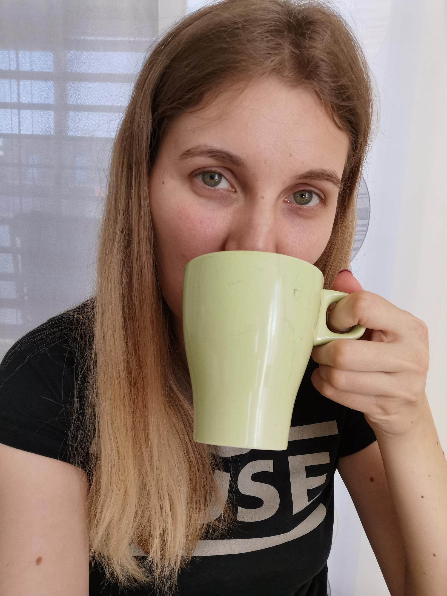

Who am I?
From my early childhood on, I’ve had an affinity for good stories and books. In fact, I’ve been a daydreamer since the early days of my childhood. “Dreamer” by Ozzy Osbourne is the song I’d describe myself with.
All the above are most likely the reason I ended up in my current job as Marketing Manager with a focus on blogging, writing, and storytelling. Working in the marketing department of a crane manufacturer may at a first glance not seem as exciting as going down the, say, lifestyle road. However, I must admit that the challenge to transform complicated stuff into inspiring content is what challenges and therefore also fascinates me.
My Life Motto
Hobbies
- Hiking
- Acting
- Music